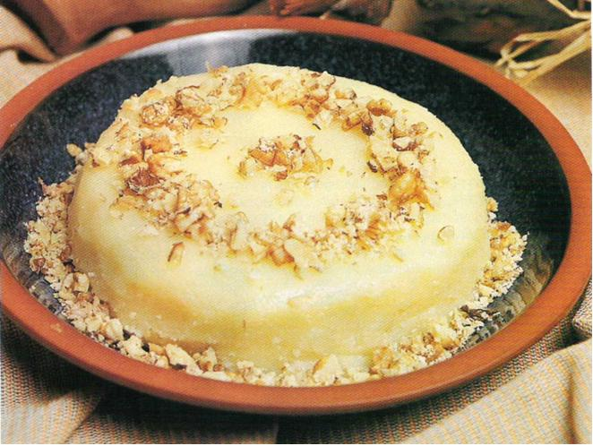
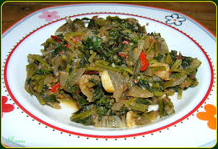
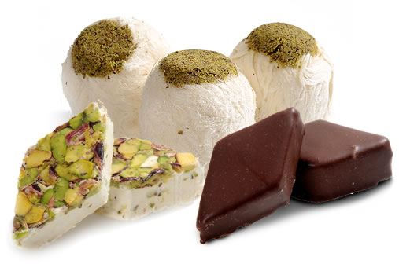

Höşmerim
Un ve peynirle yapılan Kocaeli yöresine özgü meşhur bir tatlı türüdür. Özel tuzsuz ve yağlı bir peynirle yapılan bu tatlıyı yol üstünde bazı meşhur tatlıcılarda bulabilirsiniz. Bir gece dışarıda bekletilip ekşiYen peynirin içerisine yağ ve un karıştırılır üzerine şerbet dökülerek servis edilir.

Ciğceli Kavurma
Kuşbaşı et haşlanır. Bulgur pilavı yapılır. Servis tabağına alınan bulgur pilavının üzerine kavurma dökülür. Ancak bu kavurmanın üzerine süt kaymağı eritilerek dökülür. Bu yemeği ilginç kılan püf noktasıdır.

Tavuklu Keşkek
Aşurelik buğday önce haşlanır. Daha sonra pişirilir. Pişirilen buğdaya tavuk suyu da eklenir. Bir başka kapta ise tavuklar haşlanır. Ardından didiklenir. Buğdayda piştikten sonra çatalla ezilir. İçerisinde haşlanmış ve küçük parçalara ayrılmış tavuk etleri eklenir. Kırmızı etle de yapılır. Özel gün yemeğidir.

Ebegümeci Yemeği
Eylül ve Mayıs ayları arasında çıkan çok faydalı bir bitkidir. Ispanak gibi yapılabilir. Dilerseniz zeytinyağlısı yapılır. Ya da kavurmalı ya da tereyağlısı da yapılabilir. Vitamin açısından zengindir.

Pişmaniye
Kocaeli’ne yolunuz düşerse sizden mutlaka pişmaniye isterler. Zaten yol boyu her yerde bulabilirsiniz.
|